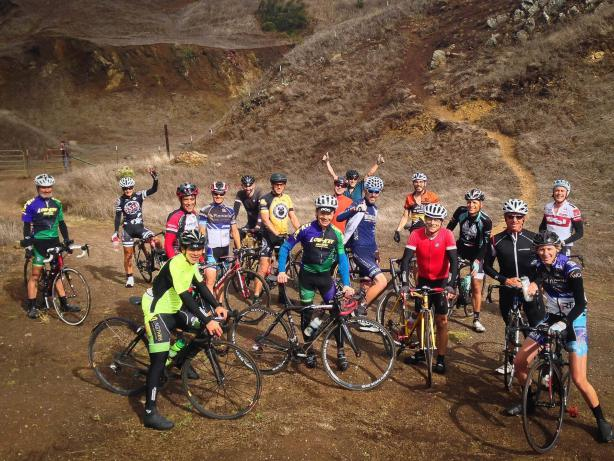

Low-Key Hillclimbs Aggregate Results:
Berkeley Hills
generated Fri Nov 4 10:34:14 PDT 2016
|
|  |
| 2014 week 4: The Low-Key crew celebrating having made it to the top of Quarry (Paul McKenzie) |
Results are listed here from the Low-Key archives, sorted by time for each climb. Some years start and/or finish time differ slightly, such as
with Kings Mt Road where after 1995 the start moved from Entrance Way to Greer.
Results are ranked by time first, score second.
Score is calculated using a simple percent-of-median-speed
formula, with time adjustments for division. These scores will generally differ from those calculated in the results for that particular year, since
the scoring scheme has evolved. Tandems are split between 1998, when they were counted as single participants, and other years, when the individual
riders have been counted separately
Results for Men
| rank | time | score | rider | cat | team | year | week | code |
|---|
| 1 | 51:04 | 119.897 | Bill Laddish | 35+ | Team CVC | 2014 | 4 | |
| 2 | 53:38 | 114.160 | Robert Easley | 45+ | Sr's & Mr's of No Mercy | 2014 | 4 | |
| 3 | 54:22 | 112.624 | Bob Gade | | Misters & Sisters | 2014 | 4 | |
| 4 | 55:40 | 109.973 | Glen Kinion | 50+ | Sr's & Mr's of No Mercy | 2014 | 4 | |
| 5 | 55:53 | 109.549 | Daniel Connelly | 45+ | Low-Key | 2014 | 4 | |
| 6 | 57:45 | 106.000 | Lindsey Furtado | 30+ | Team CVC | 2014 | 4 | |
| 7 | 59:07 | 103.566 | Rich Hill | 45+ | LGBRC | 2014 | 4 | |
| 8 | 59:40 | 102.611 | Charlie Huizenga | | Sr's & Mr's of No Mercy | 2014 | 4 | |
| 9 | 61:02 | 100.309 | Steve Fielding | 45+ | | 2014 | 4 | |
| 10 | 61:13 | 100.000 | Mike Wood | 5 | Team Roaring Mouse | 2014 | 4 | |
| 11 | 61:21 | 99.788 | Paul McKenzie | 60+ | Sr's & Mr's of No Mercy | 2014 | 4 | |
| 12 | 66:08 | 92.568 | Frank Paysen | 50+ | Chain Reaction | 2014 | 4 | |
| 13 | 66:33 | 92.000 | Curtis Kimble | 50+ | Red Peloton | 2014 | 4 | |
| 14 | 68:15 | 89.701 | Bart Niechwiej | 35+ | Google | 2014 | 4 | |
| 15 | 71:13 | 85.977 | Caleb Richardson | 30+ | Team CVC | 2014 | 4 | |
| 16 | 73:39 | 83.123 | Craig Hicks | | GPC | 2014 | 4 | |
| 17 | 78:55 | 77.583 | Martin Genova | 5 | | 2014 | 4 | |
| 18 | 96:09 | 63.683 | Ray Smith | 55+ | Team CVC | 2014 | 4 | M |
M : mishap
Results for Women
| rank | time | score | rider | cat | team | year | week | code |
|---|
| 1 | 60:41 | 121.706 | Amy Cameron | 35+ | Sr's & Mr's of No Mercy | 2014 | 4 | |
| 2 | 65:51 | 112.148 | Jennie Phillips | 50+ | Sr's & Mr's of No Mercy | 2014 | 4 | |
| 3 | 74:17 | 99.432 | Trish Pacheco | 45+ | Sr's & Mr's of No Mercy | 2014 | 4 | |
Results for Tandem
| rank | time | score | rider | cat | team | year | week | code |
|---|
| 1 | 74:05 | 82.652 | Emma Dixon | 35+ | Google | 2014 | 4 | M |
| 1 | 74:05 | 82.652 | Jonathan Dixon | 35+ | Google | 2014 | 4 | M |
M : mishap